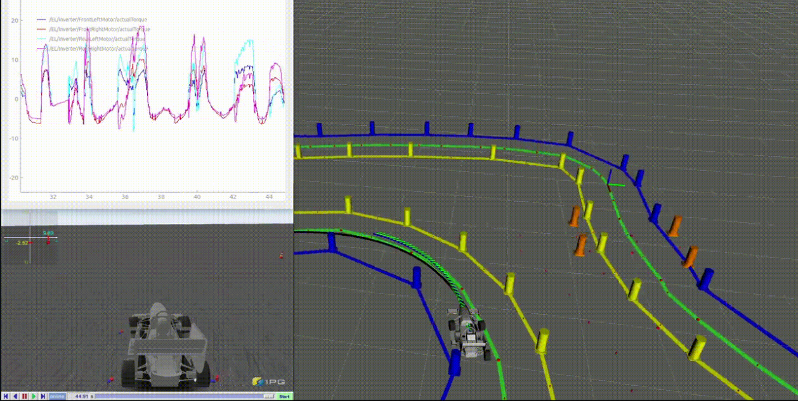
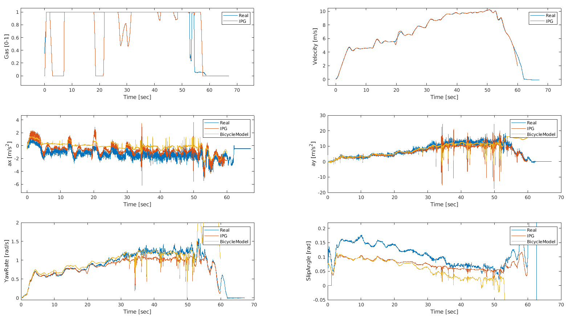

Simulation platform coupling IPG CarMaker and ROS for Formula Student autonomous vehicles.
View on GitHubFSDriverless is a simulation framework that integrates IPG Carmaker with a ROS environment, enabling comprehensive testing of autonomous systems — from perception to control — using a realistic multibody vehicle model. This setup allows teams to simulate full stacks, including low‑level control and high‑level autonomous algorithms, in a physics‑rich environment before deployment.
To use FSDriverless, first configure your system with a valid IPG CarMaker installation, ROS Noetic, and Eigen3. Create the proper symbolic links for CarMaker interfaces, update your `.bashrc` paths, then build the project and ROS workspace before launching the simulation. Detailed steps are provided in the repository’s README.
Once built, start CarMaker with the CMRosIF extension and use the provided TestRun (`FS_autonomous_Trackdrive`). This will run the simulated vehicle on an infinite track, allowing the autonomous stack to drive the vehicle using IPG CarMaker's physics engine. The visualization of the simulated FS track as well as the vehicle state is meant to be done through RViz, which can subscribe to the ROS topics published by the CarMaker interface.
The most important thing to do before using FSDriverless is to validate the CarMaker simulation against real vehicle data to ensure that the dynamics and behavior are accurately represented. Once validated, FSDriverless can be used to test and iterate on autonomous algorithms in a safe and controlled environment, allowing for rapid development and performance optimization while respecting vehicle dynamics constraints. For obvious reasons, FSDriverless does not include our validated car models so it is the user's responsibility to provide them. By default, it uses the Formula Student default car model from CarMaker.

Autonomous Driving Simulation using FSDriverless. In this case the autonomous control (lateral NMPC + cruise controller) is being simulated together with EV Control (Torque Vectoring + Regenerative Breaking)

IPG Model Validation. Here we can see the comparison between real testing data, IPG CarMaker output and a Dynamic Bicycle Model.